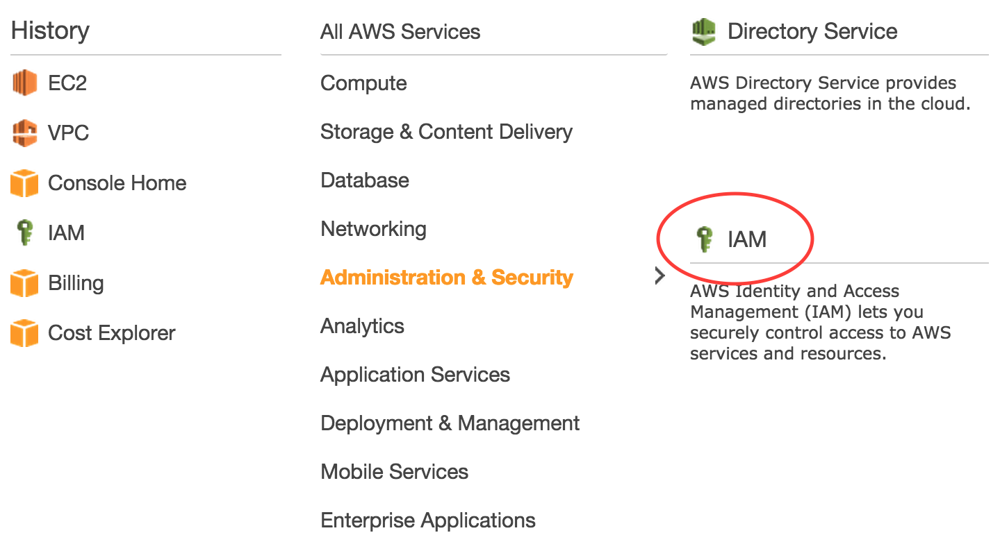
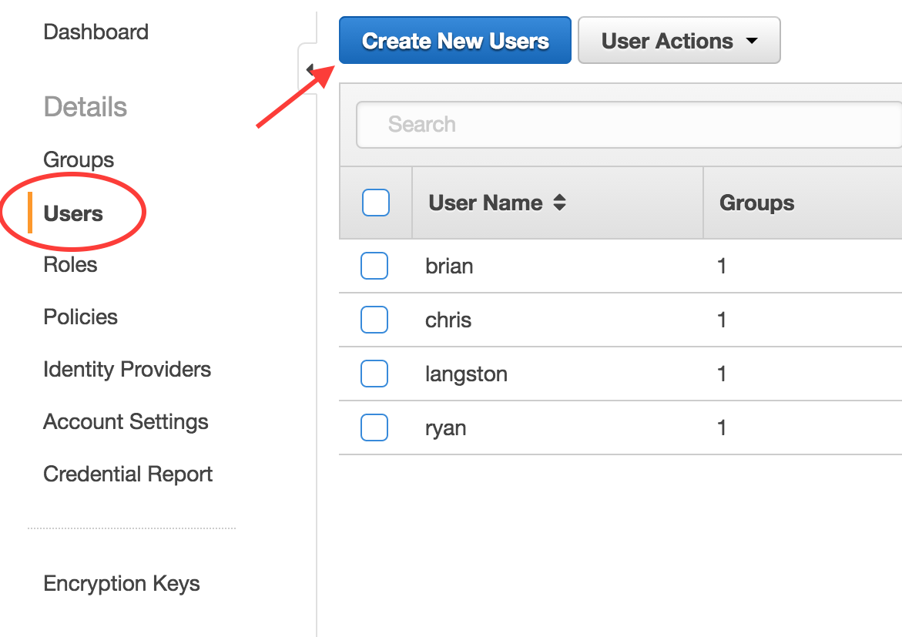
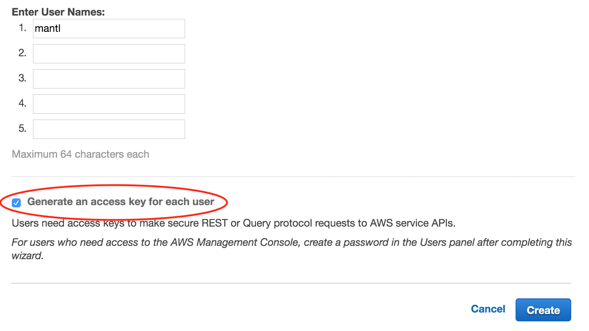
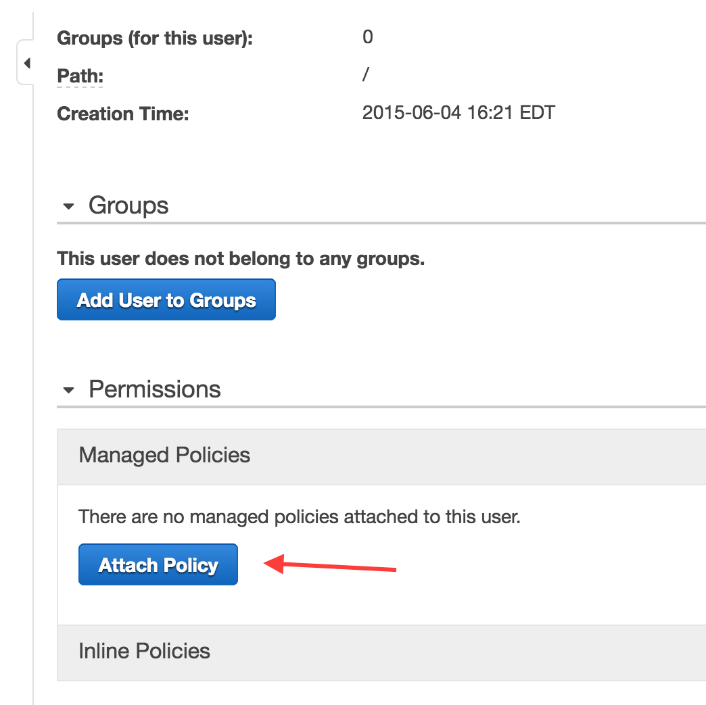
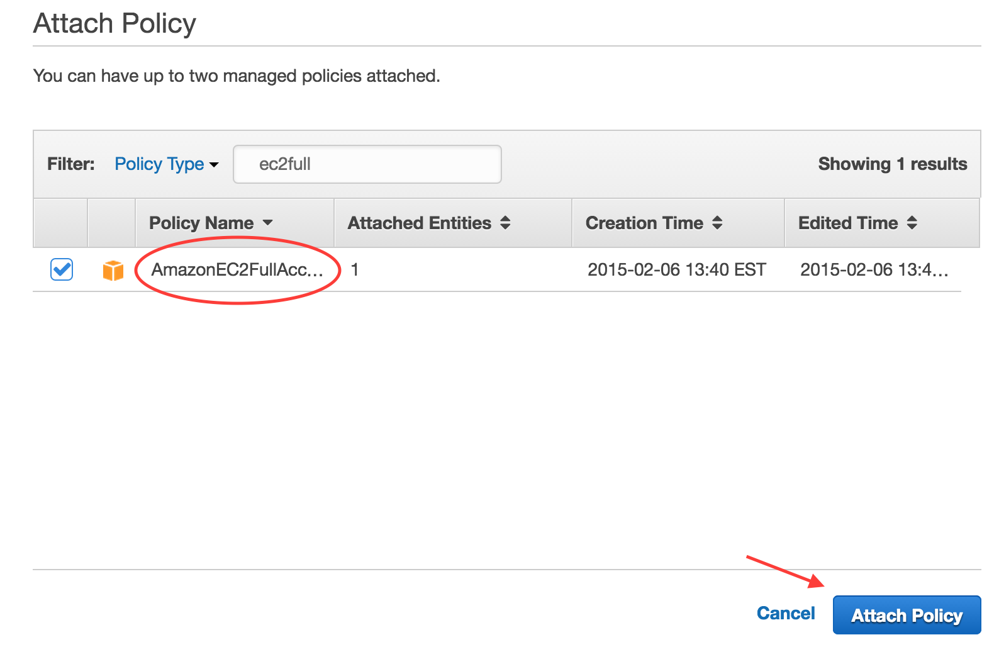

Amazon Web Services¶
New in version 1.0: multi-az support and terraform modularization
As of Mantl 0.3 you can bring up Amazon Web Services environments using Terraform. You can download Terraform from terraform.io.
Configuring Amazon Web Services for Terraform¶
Before we can build any servers using Terraform and Ansible, we need to configure authentication. We’ll be filling in the authentication variables for the template located at terraform/aws.sample.tf. The beginning of it looks like this:
variable "amis" {
default = {
us-east-1 = "ami-6d1c2007"
us-west-2 = "ami-d2c924b2"
us-west-1 = "ami-af4333cf"
eu-central-1 = "ami-9bf712f4"
eu-west-1 = "ami-7abd0209"
ap-southeast-1 = "ami-f068a193"
ap-southeast-2 = "ami-fedafc9d"
ap-northeast-1 = "ami-eec1c380"
sa-east-1 = "ami-26b93b4a"
}
}
variable "availability_zones" {
default = "a,b,c"
}
variable "control_count" { default = 3 }
variable "datacenter" {default = "aws-us-west-2"}
variable "edge_count" { default = 2 }
variable "region" {default = "us-west-2"}
variable "short_name" {default = "mantl"}
variable "ssh_username" {default = "centos"}
variable "worker_count" { default = 4 }
variable "kubeworker_count" { default = 2 }
variable "dns_subdomain" { default = ".dev" }
variable "dns_domain" { default = "my-domain.com" }
variable "dns_zone_id" { default = "XXXXXXXXXXXX" }
variable "control_type" { default = "m3.medium" }
variable "edge_type" { default = "m3.medium" }
variable "worker_type" { default = "m3.large" }
variable "kubeworker_type" { default = "m3.large" }
provider "aws" {
region = "${var.region}"
}
Copy that file in it’s entirety to the root of the project as aws.tf to start customization. In the next sections, we’ll describe the settings that you need to configure.
Do not copy the text contents above into a file, if you do not have the terraform/aws.sample.tf file, you need to clone the mantl repository. Please note, newer versions of this file do not have “access_key” or “secret_key” lines, we automatically find your AWS credentials from amazon’s new “AWS Credentials file” standard.
Store your credentials like below in a file called ~/.aws/credentials on Linux/Mac, or %USERPROFILE%\.aws\credentials on Windows.
[default]
aws_access_key_id = ACCESS_KEY
aws_secret_access_key = SECRET_KEY
If you do not have an AWS access key ID and secret key, then follow the “Creating an IAM user” section below. If you already have working AWS credentials, you can skip this step.
Creating an IAM User¶
Before running Terraform, we need to supply it with valid AWS credentials. While you could use the credentials for your AWS root account, it is not recommended. In this section, we’ll cover creating an IAM User that has the necessary permissions to build your cluster with Terraform.
Note
You’ll need to have an existing AWS account with sufficient IAM permissions in order to follow along. If not, ask your account owner to perform this step for you.
First, sign in to your AWS Console and navigate to the Identity & Access Management (IAM) service.
Next, navigate to the “Users” screen and click the “Create New Users” button.
You will be given the opportunity to create 5 different users on the next screen. For our purposes, we are just going to create one: “mantl”. Make sure that you leave the “Generate an access key for each user” option checked and click the “Create” button.
On the next screen, you will be able to view and download your new Access Key ID and Secret Access Key. Make sure you capture these values in a safe and secure place as you will need them in the next section. You won’t be able to retrieve your secret key later (although you can generate a new one, if needed).
The next step is to grant permissions to your new IAM user. Navigate back to the “Users” section and then click on the user name you just created. On the next screen, you will be able to manage the groups your user belongs to and to grant the permissions to view and modify AWS resources. For this example, we will not be using groups but that would be an option if you wanted to create multiple IAM users with the same permissions. We are going to keep it simple and use a managed policy to grant the necessary permissions to our IAM user.
Click the “Attach Policy” button.
On the “Attach Policy” screen you will see a long list of pre-built permissions policies. You can either scroll through the list or use the search filter to find the policy named “AmazonEC2FullAccess”. Check the box next to that policy and click the “Attach Policy” button.
That’s it. At this point, your IAM user has sufficient privileges to provision your cluster with Terraform.
Note
Technically the “AmazonEC2FullAccess” managed policy grants more permissions than are actually needed. If you are interested in configuring your IAM user with the minimum set of permissions to provision a cluster, you can see the custom policy included at the bottom of this document.
Note
If you want to manage DNS with Route 53, you will need to attach a Route 53 policy as well.
Provider Settings¶
access_key and secret_key are the required credentials needed by Terraform to interact with resources in your AWS account. AWS credentials can be retrieved when creating a new account or IAM user. New keys can be generated and retrieved by managing Access Keys in the IAM Web Console. If you don’t want to commit these values in the Terraform template, you can add them to your ~/.aws/credentials file or source them from the environment instead:
- AWS_ACCESS_KEY_ID¶
The AWS Access Key for a valid AWS account or IAM user with the necessary permissions.
- AWS_SECRET_ACCESS_KEY¶
The AWS secret key.
Note
As a best practice, it is preferred that you use credentials for an IAM user with appropriate permissions rather than using root account credentials.
region is the AWS region where your cluster will be provisioned. As an alternative to specifying region in the file, it can be read from the environment:
- AWS_DEFAULT_REGION¶
The AWS region in which to provision cluster instances.
Basic Settings¶
short_name is appended to the name tag and dns (if used) of each of the nodes to help better identify them. If you are planning to deploy multiple mantl clusters into the same AWS account, you’ll need to change this (otherwise AWS items like ssh key names will conflict and the second `terraform plan` will fail)
- The defaults for the below settings will work out of the box in amazons US-WEST-1 Datacenter, change them if you don’t want these defaults, or if you want larger VM’s for each of the Mantl nodes *
region is the name of the region where your cluster resources will be provisioned. As long as your control, worker and edge count is greater than 1, your nodes will be spread across the availability zones in your region.
availability_zones are the availability zones in your region that you want to deploy your EC2 instances to.
source_ami is the EC2 AMI to use for your cluster instances. This must be an AMI id that is available in the region your specified.
ssh_username is the default user name for SSH access to your cluster hosts. This value will be dependent on the source_ami that you use. Common values are centos or ec2-user.
datacenter is a name to identify your datacenter, this is important if you have more than one datacenter.
control_count, edge_count and worker_count are the number of EC2 instances that will get deployed for each node type.
control_type, edge_type and worker_type are used to specify the EC2 instance type for your control nodes and worker nodes and they must be compatible with the source_ami you have specified. The default EC2 instance type is an m3.medium.
Security Setup¶
Mantl doesn’t ship with default passwords or certs. For security, we have provided a script to generate all the security configuration for your deployment.
Please run ./security_setup from the base of the mantl repository. This will generate certificates and other security tokens needed for the mantl deployment, as well as prompting you for a mantl admin password.
If you get an ‘Import’ error when running security setup, your local machine lacks certain python modules that the script needs. Please try `` pip install pyyaml `` and then re-run ./security_setup.
Provisioning¶
Once you’re all set up with the provider, customize your modules (for control_count, worker_count, etc), run terraform get to prepare Terraform to provision your cluster, terraform plan to see what will be created, and terraform apply to provision the cluster.
After terraform apply has completed without errors, you’re ready to continue. Next, follow the instructions at getting started to install Mantl on your new AWS VM’s
- The below sections are for more information / customization only. They are not required *
Terraform State¶
Terraform stores the state of your infrastructure in a file called “terraform.tfstate”. This file can be stored locally or in a remote location such as S3. If you use the aws.sample.tf that is provided, by default the state of all the modules are stored in local terraform.tfstate file at the root of this project.
Instead of storing the state for all the modules in one file, you might deploy the modules independently and have different terraform.tfstate for each module (either locally or remote). This can help with blue/green deployments, or making sure you don’t accidentally override more static parts of the infrastructure such as a VPC.
In the aws.sample.tf we have included examples of how you would reference a remote state file for VPC variables.
To create terraform.tfstate locally for the VPC module, you would simply run terraform get, terraform plan and terraform apply in the terraform/aws/vpc/ directory. Then in your aws.tf file you would want to comment out:
module "vpc" {
source ="./terraform/aws/vpc"
availability_zones = "${availability_zones}"
short_name = "${var.short_name}"
region = "${var.region}"
}
And uncomment:
#resource "terraform_remote_state" "vpc" {
# backend = "_local"
# config {
# path = "./vpc/terraform.tfstate"
# }
# }
#availability_zones = "${terraform_remote_state.vpc.output.availability_zones}"
#default_security_group_id = "${terraform_remote_state.vpc.output.default_security_group}"
#vpc_id = "${terraform_remote_state.vpc.output.vpc_id}"
#vpc_subnet_ids = "${terraform_remote_state.vpc.output.subnet_ids}"
Ideally you would store the state remotely, but configuring that is outside the scope of this document. This is a good explanation on how to configure and use remote state.
Custom IAM Policy¶
At the time of this writing, the following IAM policy grants the minimal permissions needed to provision an AWS cluster with Terraform.
{
"Version": "2012-10-17",
"Statement": [
{
"Sid": "Stmt1433450536000",
"Effect": "Allow",
"Action": [
"ec2:AttachInternetGateway",
"ec2:AttachVolume",
"ec2:AuthorizeSecurityGroupIngress",
"ec2:CreateInternetGateway",
"ec2:CreateRoute",
"ec2:CreateRouteTable",
"ec2:CreateSecurityGroup",
"ec2:CreateSubnet",
"ec2:CreateTags",
"ec2:CreateVolume",
"ec2:CreateVpc",
"ec2:DeleteInternetGateway",
"ec2:DeleteKeyPair",
"ec2:DeleteRouteTable",
"ec2:DeleteSecurityGroup",
"ec2:DeleteSubnet",
"ec2:DeleteVolume",
"ec2:DeleteVpc",
"ec2:DescribeImages",
"ec2:DescribeInstances",
"ec2:DescribeInternetGateways",
"ec2:DescribeKeyPairs",
"ec2:DescribeNetworkAcls",
"ec2:DescribeRouteTables",
"ec2:DescribeSecurityGroups",
"ec2:DescribeSubnets",
"ec2:DescribeVolumes",
"ec2:DescribeVpcAttribute",
"ec2:DescribeVpcs",
"ec2:DetachInternetGateway",
"ec2:DetachVolume",
"ec2:ImportKeyPair",
"ec2:ModifyInstanceAttribute",
"ec2:ModifyVpcAttribute",
"ec2:ReplaceRouteTableAssociation",
"ec2:RevokeSecurityGroupEgress",
"ec2:RunInstances",
"ec2:TerminateInstances"
],
"Resource": [
"*"
]
}
]
}
For managing DNS with Route 53, you can use a policy like the following:
{
"Version": "2012-10-17",
"Statement":[
{
"Effect":"Allow",
"Action":["route53:ChangeResourceRecordSets"],
"Resource":"arn:aws:route53:::hostedzone/YOUR_ZONE_HOSTED_ID"
},
{
"Effect":"Allow",
"Action":["route53:GetChange"],
"Resource":"arn:aws:route53:::change/*"
}
]
}
You would replace HOSTED_ZONE_ID with the hosted zone ID of your domain in Route 53.
Adding an Elastic Load Balancer (ELB)¶
Optionally, you can configure your environment to include an Elastic Load Balancer (ELB) in front of Mantl UI.
You will need to ensure that your IAM user has the following permissions:
- elasticloadbalancing:AddTags
- elasticloadbalancing:ApplySecurityGroupsToLoadBalancer
- elasticloadbalancing:ConfigureHealthCheck
- elasticloadbalancing:CreateLoadBalancer
- elasticloadbalancing:CreateLoadBalancerListeners
- elasticloadbalancing:DeleteLoadBalance
- elasticloadbalancing:DescribeLoadBalancerAttributes
- elasticloadbalancing:DescribeLoadBalancers
- elasticloadbalancing:ModifyLoadBalancerAttributes
- elasticloadbalancing:RegisterInstancesWithLoadBalancer
- iam:DeleteServerCertificate
- iam:GetServerCertificate
- iam:UploadServerCertificate
In your aws.tf, you will want to uncomment the aws-elb module:
# Example setup for an AWS ELB
module "aws-elb" {
source = "./terraform/aws/elb"
short_name = "${var.short_name}"
instances = "${module.control-nodes.control_ids}"
subnets = "${terraform_remote_state.vpc.output.subnet_ids}"
security_groups = "${module.control-nodes.ui_security_group},${terraform_remote_state.vpc.output.default_security_group}"
}